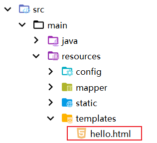
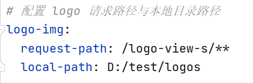

# 1. 解决 Spring Boot 访问 resources 目录下的 static 资源问题
下面从读、写两个方面解析访问 static 目录下的内容
# 1.2 读取
读取资源（也就是 web 端访问 static 资源）其实就很简单，Spring Boot 默认就配置了 /static/** 映射，所以无需任何配置就能访问。但是需要注意的是，如果使用了模板引擎（比如 thymeleaf），就需要手动配置，以下演示两种通过模板引擎访问 static 资源的方式：
直接将资源在 templates 目录下，然后就能按路径访问，因为默认就会在 templates 目录下找静态资源

那么访问 hello.html 可以直接：localhost:8080/hello.html如果要直接访问 resource/static，那就需要在 application.yml 中添加如下配置，否则就会出现 404
spring:
mvc:
static-path-pattern: /static/**
# 2. 写入
也称上传资源，其实是不建议往 resources 目录下直接写入业务相关的文件（尤其是存储图片）的，因为后续可能会遇到
- 资源的实时访问问题，比如上传图片后，然后再访问，可能需要重启才能继续访问
- jar 对 resources 目录进行保护措施，可能读取不到上传的资源
但是有些极少量的文件需要存储到 resources 目录下，这就需要先获取到 reources 下的相应目录，此时应该考虑将来运行 jar 包时不能出错，因此我推荐一下两种方式获取 static 目录：
- 通过 ResourceUtils 工具获取 static 目录
try { | |
File staticDir = new File (ResourceUtils.getURL("classpath:static").getPath()); | |
} catch (FileNotFoundException e) { | |
//static 目录不存在！ | |
e.printStackTrace(); | |
} |
- 通过 ClassPathResource 获取
// 这里要具体到你要访问的文件，然后拿到文件流对象，你就可以放肆操作了！ | |
ClassPathResource classPathResource = new ClassPathResource("/static/xxx/xxx.png"); | |
InputStream inputStream = classPathResource.getInputStream(); | |
// 转成字节数组 | |
final byte[] bytes = IOUtil.toByteArray(inputStream); | |
// 比如把图片装成 base64 编码的字符串 | |
String imgStr = "data:image/png;base64, " + Base64.getEncoder().encodeToString(bytes); |
# 1.3 小结
最后还想说一下，如果要上传图片，最好不要直接在 jar 包里上传图片，应该考虑：
建立专门的静态资源服务器（图片服务器）可以使用 nginx
其次可以考虑做成本地硬盘上的映射目录：
- 添加配置文件 WebMVCConfig，然后在添加资源映射:
@Slf4j@Configurationpublic class WebMVCConfig implements WebMvcConfigurer {
@Value("${logo-img.request-path}")
private String logoReqPath; // 请求地址
@Value("${logo-img.local-path}")
private String logoLocPath; // 本地存放资源目录的绝对路径
@Overridepublic void addResourceHandlers(ResourceHandlerRegistry registry) {
File logoDir = new File(logoLocPath);
boolean flag = false;
if (!logoDir.exists())
flag = logoDir.mkdirs();
if (flag)
log.info("已成功创建资源 logo 目录：{}", logoLocPath);
log.info("getAbsolutePath = {}", logoDir.getAbsolutePath());
log.info("getPath = {}", logoDir.getPath());
registry.addResourceHandler(logoReqPath)
.addResourceLocations("file:" + logoDir.getAbsolutePath() + File.separator);
}}上述参数在 application.yml 配置如下：
最后访问
/logo-view-s/xxx.png就会映射到D:/test/logos/xxx.png
# 2. 减少 Spring Boot 微服务项目 maven 打包的体积
对于很多部署在一个局域网的众多微服务而言，很多 jar 包都重复出现，对此，可以设立一个公共的 jar 包中心，这样就能在业务项目打包时，去除所有第三方 jar 包，只将自己的业务代码打包，如此一来，必能减少打包的体积！
# 2.1 修改 pom 文件中 maven 插件部分
<build> | |
<plugins> | |
<plugin> | |
<groupId>org.springframework.boot</groupId> | |
<artifactId>spring-boot-maven-plugin</artifactId> | |
<!-- 原来的打包方式 --> | |
<!--<configuration> | |
<excludes> | |
<exclude> | |
<groupId>org.projectlombok</groupId> | |
<artifactId>lombok</artifactId> | |
</exclude> | |
</excludes> | |
</configuration>--> | |
<configuration> | |
<mainClass>edu.dublbo.auth.GuanAuthApplication</mainClass> | |
<layout>ZIP</layout> | |
<includes> | |
<!-- 去除所有第三发 jar 包（nothing 就是不要包含任何 jar 包） --> | |
<include> | |
<groupId>nothing</groupId> | |
<artifactId>nothing</artifactId> | |
</include> | |
</includes> | |
</configuration> | |
<executions> | |
<execution> | |
<goals> | |
<!-- 进行重新打包 --> | |
<goal>repackage</goal> | |
</goals> | |
</execution> | |
</executions> | |
</plugin> | |
</plugins> | |
</build> |
# 2.2 运行 jar
执行结果重新对比，主要的变化就是 lib 目录下所有第三方的 jar 全部没有，当然如果要运行，就必须重新引入 lib 目录，也就是要让类加载器找到这些类。
[nohup] java -Dloader.path='第三方jar包所在目录' -jar 运行的jar包 | |
## 例如： | |
nohup java -Dloader.path="/root/workspace/myjars/lib/" -jar guan-auth-1.0.jar > /root/workspace/logs/auth/guan-auth.log 2>&1 & |
# 2.3 参考资料
- https://www.cnblogs.com/youcong/p/13548730.html